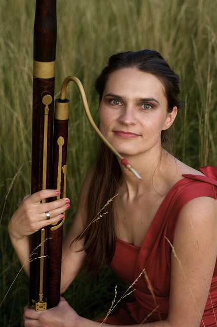

Hello, my name is
Kamila Marcinkowska-Prasad.
I am a Bassoonist and also Perform Historical Music
on Period Instruments including
Dulzian.
Baroque.
Classical.
Romantic Bassoon.
About me

Kamila Marcinkowska-Prasad is a bassoonist whom performs historical music on period instruments including dulzian, baroque, classical and romantic bassoons. She also performs occasionally on the recorder. She finished her bachelors degree at the Royal Conservatory of the Hague in 2006 where she studied under Donna Agrell and has since enjoyed an active career performing around Europe in several orchestras and chamber groups including Warsaw Chamber Opera, Wroclaw Baroque Orchestra, Capella Cracoviensis, Ensamble Cristofori, and Engave Baroque from Copenhagen, Australian Romantic and Classical Orchestra. She has also been featured on several recordings for groups such as Les Muffati, Arte Dei Suonatori, Collegium Marianum, Ensemble Inegal, Gabrielli Consort and Players, Collegium 1704, Engage Baroque and the Copenhagen Soloists. Throughout her career in Europe she has performed under several well known conductors including Paul Mc Creesh, Peter Van Heyghen, Alfredo Bernadini, Philip Herrevege, Jaap Ter Linden, and Vincent Dumestre. Kamila graduated from Juilliard Historical Performance Practice program where she studied under Dominic Teresi. During that last 2 years performed with Juilliard 415 with Sir William Christie, Jordi Savall, Masaki Suzuki, Richard Eggar, Robert Mealy, Monica Hugget, Nicholas McGegan. Year of 2016 she became recipient of the English Concert in America Fellowship and soon after established her own ensemble called “Silesian Baroque Orchestra” that concentrates on seventeenth and eighteenth century European Music.
Curriculum Vitae
-
Conservatorium Van Amsterdam
2001
Studied Modern Bassoon at Conservatorium Van Amsterdam, Performed in Amsterdam Conservatory Baroque Orchestra under Alfredo Bernardini
-
Royal Conservatorie Den Haag
2002 to 2006
Studied with Donna Agrell at Royal Conservatorie Den Haag.
- Auditioned and was awarded 1st chair baroque bassoonist for the Ambroney Youth Orchestra led by Paul Mc Creesh.
- Performed for 3 straight months in France, Portugal, and Holland.
- Attended several early music workshops and performed locally in student orchestras.
-
Freelance
2006
Began working freelance with Warsaw Chamber Opera
-
Full Time Employement
2007 to 2009
Employed full time as 1st chair bassoonist with Warsaw Chamber Opera,
Performed and recorded with Les Muffatti under Peter Van Heyhgen.
-
Performances
2009 to 2013
- Performed and recorded several cd's in Czech Republic as 1st bassoonist with Collegium Marianum led by Jana Semeradova and Ensemble Innegal.
- Began performing regularly with Wroclaw Baroque Orchestra and as first and 2nd Bassoonist. Guest Conductors included Paul Mc Creesh, Peter Van Heyghen, Alfredo Bernadini, Jaap Ter Linden, Philip Herrevege
- Performed and Recorded with Arte Dei Suonatori under Alpha Label with Alexis Kossenko
- Performed several times with Capella Cracoviensis as principal bassoonist and continuo section leader. Guest conductors and performers included Alfredo Bernardini, Vincent Dumestre, Jan Tomasz Adamus
- Performed with Engave Baroque Ensemble in Copenhagen several times as a continuo player for Bach Cantatas.
- Several recordings and performances with local choirs and orchestras in Germany, Spain, Holland, Slovakia, Hungary, Slovakia
- Recently performed chamber music with Ensemble Cristofori as 2nd Bassoonist
- Invited by Krakow Conservatory to lead and train the continuo section
-
Juilliard
2014 to 2016
Studying at Juilliard Historical Performance Practice with Dominic Teresi. During that last 2 years performed with Sir William Christie, Jordi Savall, Masaki Suzuki, Richard Eggar, Robert Mealy, Monica Hugget.
-
Fellowship
2016
Recipient of the English Concert in America Fellowship
-
Performance with Gabrielli Consort
2016
After Graduation in May I will perform and record with the Gabrielli Consort and Players, Collegium 1704, Ensemble Innegal, and in November the Copenhagen Soloists
I am a Bassoonist and also Perform Historical Music
on Period Instruments including Dulzian. Baroque. Classical. Romantic Bassoon.
About me
Kamila Marcinkowska-Prasad is a bassoonist whom performs historical music on period instruments including dulzian, baroque, classical and romantic bassoons. She also performs occasionally on the recorder. She finished her bachelors degree at the Royal Conservatory of the Hague in 2006 where she studied under Donna Agrell and has since enjoyed an active career performing around Europe in several orchestras and chamber groups including Warsaw Chamber Opera, Wroclaw Baroque Orchestra, Capella Cracoviensis, Ensamble Cristofori, and Engave Baroque from Copenhagen, Australian Romantic and Classical Orchestra. She has also been featured on several recordings for groups such as Les Muffati, Arte Dei Suonatori, Collegium Marianum, Ensemble Inegal, Gabrielli Consort and Players, Collegium 1704, Engage Baroque and the Copenhagen Soloists. Throughout her career in Europe she has performed under several well known conductors including Paul Mc Creesh, Peter Van Heyghen, Alfredo Bernadini, Philip Herrevege, Jaap Ter Linden, and Vincent Dumestre. Kamila graduated from Juilliard Historical Performance Practice program where she studied under Dominic Teresi. During that last 2 years performed with Juilliard 415 with Sir William Christie, Jordi Savall, Masaki Suzuki, Richard Eggar, Robert Mealy, Monica Hugget, Nicholas McGegan. Year of 2016 she became recipient of the English Concert in America Fellowship and soon after established her own ensemble called “Silesian Baroque Orchestra” that concentrates on seventeenth and eighteenth century European Music.
Curriculum Vitae
-
Conservatorium Van Amsterdam 2001Studied Modern Bassoon at Conservatorium Van Amsterdam, Performed in Amsterdam Conservatory Baroque Orchestra under Alfredo Bernardini
-
Royal Conservatorie Den Haag 2002 to 2006Studied with Donna Agrell at Royal Conservatorie Den Haag.
- Auditioned and was awarded 1st chair baroque bassoonist for the Ambroney Youth Orchestra led by Paul Mc Creesh.
- Performed for 3 straight months in France, Portugal, and Holland.
- Attended several early music workshops and performed locally in student orchestras.
-
Freelance 2006Began working freelance with Warsaw Chamber Opera
-
Full Time Employement 2007 to 2009Employed full time as 1st chair bassoonist with Warsaw Chamber Opera, Performed and recorded with Les Muffatti under Peter Van Heyhgen.
-
Performances 2009 to 2013
- Performed and recorded several cd's in Czech Republic as 1st bassoonist with Collegium Marianum led by Jana Semeradova and Ensemble Innegal.
- Began performing regularly with Wroclaw Baroque Orchestra and as first and 2nd Bassoonist. Guest Conductors included Paul Mc Creesh, Peter Van Heyghen, Alfredo Bernadini, Jaap Ter Linden, Philip Herrevege
- Performed and Recorded with Arte Dei Suonatori under Alpha Label with Alexis Kossenko
- Performed several times with Capella Cracoviensis as principal bassoonist and continuo section leader. Guest conductors and performers included Alfredo Bernardini, Vincent Dumestre, Jan Tomasz Adamus
- Performed with Engave Baroque Ensemble in Copenhagen several times as a continuo player for Bach Cantatas.
- Several recordings and performances with local choirs and orchestras in Germany, Spain, Holland, Slovakia, Hungary, Slovakia
- Recently performed chamber music with Ensemble Cristofori as 2nd Bassoonist
- Invited by Krakow Conservatory to lead and train the continuo section
-
Juilliard 2014 to 2016Studying at Juilliard Historical Performance Practice with Dominic Teresi. During that last 2 years performed with Sir William Christie, Jordi Savall, Masaki Suzuki, Richard Eggar, Robert Mealy, Monica Hugget.
-
Fellowship 2016Recipient of the English Concert in America Fellowship
-
Performance with Gabrielli Consort 2016After Graduation in May I will perform and record with the Gabrielli Consort and Players, Collegium 1704, Ensemble Innegal, and in November the Copenhagen Soloists